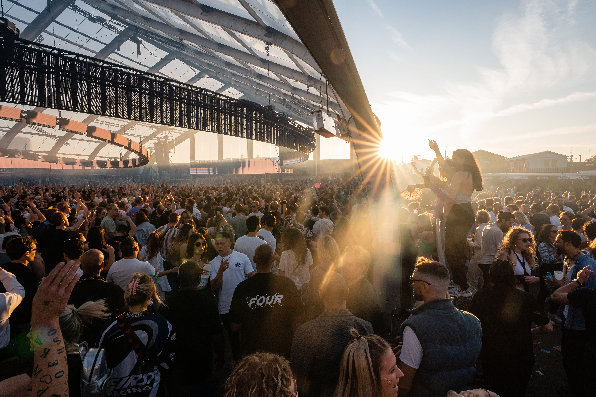
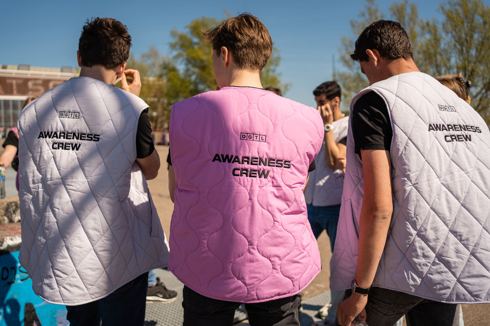
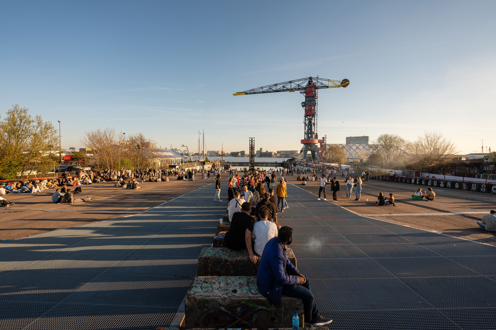
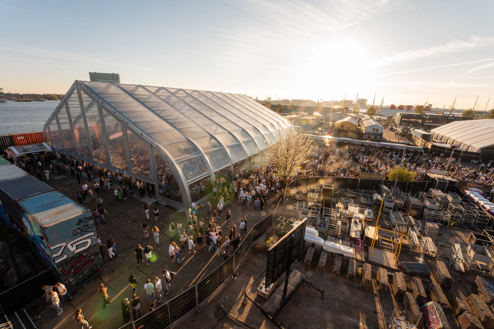
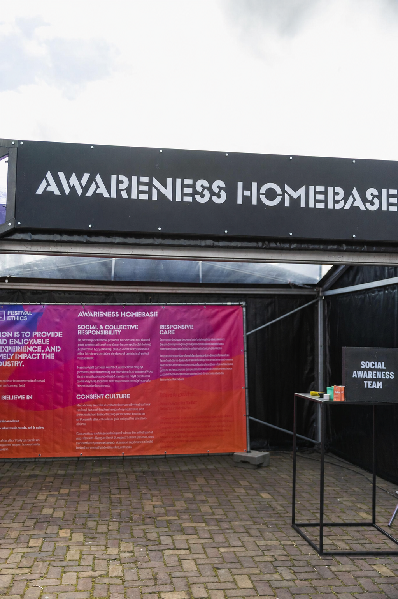
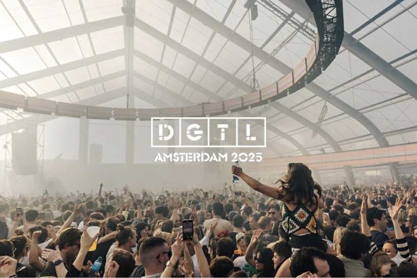

Case study / 2025
DGTL
Amsterdam
Project overview
DGTL Amsterdam is an international electronic music, art and innovation festival at NDSM, recognised for combining large-scale festival production with a strong focus on sustainability and socially conscious dancefloors. I work with Revolution Academy as Awareness Crew Support, contributing to the festival’s Social Awareness operation through mobile presence and direct visitor care across the site.
My role
Social Awareness
Support.
- Maintain a visible awareness presence across the festival site, moving between dancefloors, entrance, backstage and other visitor areas.
- Monitor visitor wellbeing and behaviour, identifying situations where someone may need support, space or further assistance.
- Provide direct visitor care when required, supporting guests experiencing discomfort, substance-related effects or other wellbeing concerns.
- Support visitors who feel unsafe or overwhelmed, including providing access to the awareness home base and a calmer environment when needed.
- Respond to harassment and unsafe behaviour together with the awareness team, providing immediate support and escalating situations through the appropriate event structure.
- Work within DGTL’s awareness procedures and briefing structure, maintaining a consistent approach across different zones of the festival.
Project context
DGTL’s Awareness Crew operates as a visible and approachable presence across the festival, supporting the wider goal of creating safer and more socially conscious dancefloors. Small mobile teams cover different areas of the site, supported by a home base where visitors can step away from the crowd when they need additional space or care.
The work combines observation, direct visitor support and response to situations involving discomfort, harassment or unsafe behaviour. Support remains visitor-centred, with situations escalated through the appropriate event structure when additional intervention is required.
Experience
Creating space for people to feel safe, supported and seen.The role brings together social awareness, visitor care and active presence across a large-scale festival environment.
Gallery
Project material.
Scroll to explore · 6 photos





